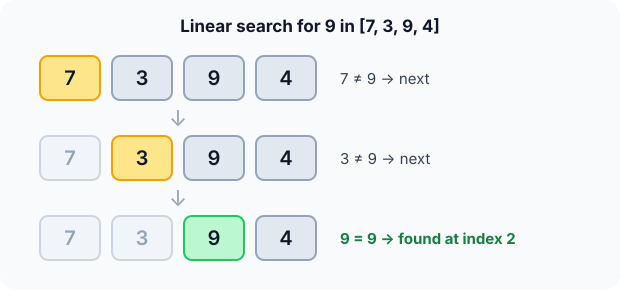

Prerequisites
- Arrays and zero-based indexing.
- A
forloop with an earlyreturn. - Big-O notation.
The analogy
Everyday analogy
You've lost your keys, and your coat has many pockets in no particular order. The only sure way is to check pocket 1, then pocket 2, and so on.
Linear search does the same. With no order to use, each element might be the one, so it checks them one by one. If the keys are in the last pocket, you checked them all.
How it works
Data requirement: none. The array can be in any order.
Start with one search by hand
Look for 9 in [7, 3, 9, 4], starting from the left. Guess first, then open "Check".
Example: predict before you read
Step 1. Compare 7 with 9. Predict: stop or continue?
Check
7 ≠ 9, so continue to index 1.
Step 2. Cover the next line and guess: what happens at 3?
Check
3 ≠ 9, so continue to index 2.
Step 3. Compare 9 with 9. Predict: what does the function return?
Check
A match, so it returns index 2. The 4 is never checked. Three comparisons.

Quick recall: Before reading further, cover the text above and say out loud: when does linear search stop?
Check your answer
As soon as it finds the target, or after checking the last element without a match.
Finish the picture
Now search the same array for a number that isn't there.
- Search for 5. Predict: how many comparisons, and what is returned?
Check
All 4 elements are checked, none match, so it returns −1. A miss always costs $n$ comparisons.
- Search for 7. Predict: how many comparisons?
Check
Just 1, since 7 is at index 0. That's the best case.
Quick recall: Without scrolling up, say out loud: why did the search for 5 have to check every element?
Check your answer
The array has no order, so seeing 7, 3 and 9 tells you nothing about the rest. Only checking the last element proves 5 is missing.
The rule in plain words
Start at index 0. If the element equals the target, return its index. Otherwise move one step right.
If you pass the end of the array, the target isn't there: return −1.
Quick recall: Before you read the code, write the three steps of linear search in your own words. Then check below.
Check your answer
1. Look at the current element. 2. If it's the target, report its position. 3. Otherwise move to the next one; if none are left, report "not found".
The code
Read this code after you have done one search by hand. It will make more sense.
int linear_search(const int a[], int n, int x) {
for (int i = 0; i < n; i++)
if (a[i] == x) return i; /* first match wins */
return -1; /* checked everything: not found */
}Definition
What you just did, in one line: linear search compares the target with each element in order and returns the index of the first match, or −1 if there is none.
flowchart TD
A["i = 0"] --> B{"i < n ?"}
B -->|no| F["Return -1: not found"]
B -->|yes| C{"a[i] == x ?"}
C -->|yes| D["Return i"]
C -->|no| E["i = i + 1"]
E --> B
[7, 3, 9, 4], which box do you end in? (Answer: "Return -1", after going round the loop four times.)How fast is it?
Quick recall: Before looking at the formula, predict: if the target is equally likely to be at any position, how many comparisons does a successful search take on average?
Check your answer
About half the array: $\frac{n+1}{2}$ comparisons.
A target at position $i$ (counting from 1) costs $i$ comparisons. Averaged over all $n$ positions:
$$\frac{1}{n}\sum_{i=1}^{n} i \;=\; \frac{n+1}{2} \;=\; O(n).$$Halving doesn't change the growth, so the average and worst cases are both $O(n)$.
| Best | Average | Worst | Extra space | Data requirement |
|---|---|---|---|---|
| $O(1)$ | $O(n)$ | $O(n)$ | $O(1)$ | None |
Warning
On a sorted array, linear search wastes the order. Binary search finds the same element in $O(\log n)$: 20 comparisons instead of up to a million for $n = 10^6$.
Exam tip
Know three numbers: best case 1 comparison, unsuccessful search $n$ comparisons, average successful search $\frac{n+1}{2}$.
Common mistakes
- Returning −1 inside the loop on the first mismatch, so only
a[0]is ever checked. - Looping with
i <= n, which reads one element past the end. - Sorting the array first "to search faster": sorting costs $O(n \log n)$, more than one linear search.
Try it yourself
Exercise 1 (warm-up)
Search for 6 in [8, 6, 1, 6]. What index is returned, and after how many comparisons?
Hint
The search stops at the first match.
Answer
Index 1, after 2 comparisons. The second 6 at index 3 is never reached.
Exercise 2 (a bit harder)
You must answer 1,000 searches on the same unsorted array of 1,000,000 numbers. Is it better to search linearly each time, or to sort once and use binary search? Write your answer down before you open it.
Show answer
Sort once. Linear: about $1000 \times 10^6 = 10^9$ comparisons. Sort plus binary: about $2 \times 10^7$ for the sort plus $1000 \times 20$ for the searches. Sorting pays off once there are many searches.
Did you know?
Did you know?
For small arrays, a few dozen elements, linear search often beats binary search on real hardware. It reads memory in order, which the CPU cache and branch predictor love.
That's why it's worth knowing well: it's the default for small or unsorted data, and the baseline every faster search is measured against.
Key points to remember
If you remember one thing from each line, remember the because.
- It works on unsorted data because it never assumes anything about elements it hasn't checked.
- The worst case is $O(n)$ because a missing target can only be ruled out by checking all $n$ elements.
- The average successful search is $\frac{n+1}{2}$ comparisons because the target is, on average, halfway along.
- It returns the first match because it scans left to right and stops immediately.
- Extra space is $O(1)$ because it only keeps a loop index.
Self-check questions
Answer these in order, out loud. They follow the page, so your answers become the script of your video.
- How is linear search like looking for keys in your pockets?
Sample answer
With no order to the pockets, any of them could hold the keys, so you check them one by one until you find them or run out.
- Walk through a search for 9 in [7, 3, 9, 4].
Sample answer
7 is not 9, 3 is not 9, 9 matches, so it returns index 2 after three comparisons.
- Why does the code return −1 only after the loop, never inside it?
A good answer says what one mismatch tells you.
Sample answer
One mismatch only rules out that one element. You can only say "not found" after every element has been checked.
- So what is linear search, in one sentence?
Sample answer
It checks each element in order and returns the index of the first one equal to the target, or −1.
- Why must an unsuccessful search check every element?
A good answer mentions the missing order.
Sample answer
Without order, the elements you've seen say nothing about the rest. The target could always be in the next slot.
- What are its best, average and worst cases?
Sample answer
Best $O(1)$ when the target is first, average $O(n)$ with about $\frac{n+1}{2}$ comparisons, worst $O(n)$. Extra space is $O(1)$.
- When should you not use linear search?
Sample answer
When the data is sorted, or when you'll search the same big array many times. Then binary search, after a one-off sort if needed, is far faster.
- If you had to teach this to a friend in 2 minutes, what would you leave out, and why?
Sample answer
I'd leave out the $\frac{n+1}{2}$ average formula and the cache details. I'd keep the pocket analogy, one search on a small array, and "works on anything, $O(n)$, use binary search if sorted".
External resources
- GeeksforGeeks: Linear search: an article with code in several languages.
- Wikipedia: Linear search: analysis and the sentinel variant.
- Khan Academy: Algorithms: an intro course that starts with searching.
Videos
- YouTube search: linear search vs binary search: pick a short comparison video.